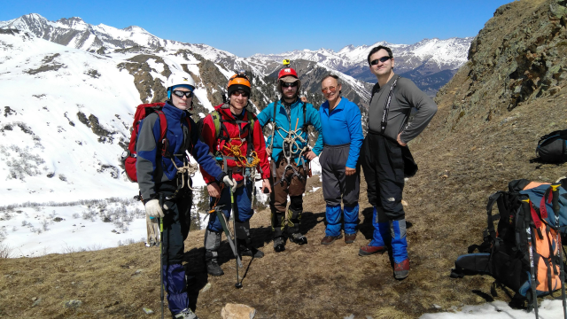
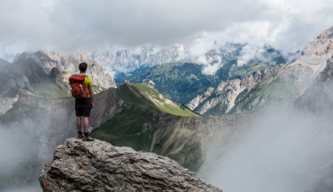

один из самых экстремальных и в тоже время эстетичных видов спорта. Он прекрасно сочетает в себе красоту человеческого тела с неподражаемой красотой природы.
Скалолазание
О скалолазании
Скалолазание — популярный вид спорта, суть которого
заключается в прохождении скалолазной трассы. Раньше
под данным термином подразумевался исключительно выезд
на скалы, но в наши дни все поменялось, так как свое
развитие получили скалодромы, имитирующие скалолазный
рельеф. Скалолазание — самостоятельный вид спорта.
Альпинизм зародился средь высочайших горных массивов,
а слово «альпинизм», к которому часто приравняют
«скалолазание», пошло от Альп — это самые высокие
горы в Западной Европе.
Скалолазание стало полноценным видом спорта в нашей стране,
60 лет тому назад во времена СССР. А в январе 2007 года была
образована Международная федерация спортивного скалолазания
IFSC, в которую вошло 68 стран.
Появление спортивного скалолазания, а также его общественное
признание навсегда изменили этот вид спорта. Появление
искусственных гор стало неизбежным!


Скалолазание получило признание не только как соревновательный
спорт. Роль скалолазания сильно выросла. Достаточно посмотреть
на европейские страны, где скалолазание было включено в учебную
программу. Все больше и больше скалодромов начали появляться в
учебных заведениях разных типов. Это как детские сады, так и ВУЗы.
Также стали производиться специальные скалодромы, рассчитанные на
людей с ограниченными возможностями.
Скалолазание — это экстрим. Если соблюдать технику безопасности,
то риска, опасности для жизни и здоровья человека совершенно нет.
Зато всегда есть адреналин в крови, который так необходим людям,
особенно тем, кто давно его не чувствовал на себе. Скалолазание —
спорт, где все зависит от человека. Только человек и цель!
В наши дни многие рассматривают скалолазание как фитнес, как способ
активного и здорового образа жизни. Все больше и больше скалодромов,
скалолазных тренажеров можно наблюдать в фитнес-центрах.
Тот, кто хочет покорить вершину ради развлечения, может посетить
аттракционы-скалодромы, которые можно найти в торгово-развлекательных
центрах, на пляжах, и в прочих людных местах.
Где
Вариантов достаточно много! Крым, Кавказ, КАрелия, Елец и даже Каменный Лог! Также можно заниматься на скалодроме или в городской инфраструктуре.
Кто
При грамотном подходе скалолазанием может заниматься человек любого возраста: от мала до стара. А мы готовы поделиться опытом и знаниями!
Когда
Весной хорошо в Архызе, летом в Уллу-Тау и Безенги, осенью чудесно в Крыму,
а зимой везде хорошо, если вы экипированы и подготовлены!